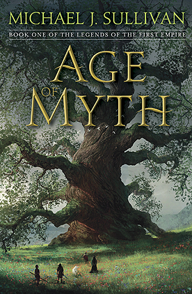

Age of Myth
- Read on 2018-08-21
- Rating: ️️️️️
- Format: 🎧 (16 hours 55 minutes)
I've gone through the first book of a number of fantasy series recently. I'm most likely to keep going in this one. The author's release style (of having already written the entire series before ever releasing the first) is appealing, knowing we'll eventually get the whole story. Still, the author has built a decent world, with interesting cultures, people, relationships, religion, and more. I also like that the "magic" in the book isn't anywhere near being explained enough, so it's left quite a bit of mystery. I'll be back for the next book (which has already been release, along with the third).
Watch out for bears.
- Read on 2023-05-24
- Rating: ️️️️️
- Format: 🎧 (16 hours 55 minutes)
2023-05-24:
I decided to revisit this series, now that all the books have been released. This is a reread, and it's still an enjoyable book - but not blow-my-socks-off level. There's a lot of world-building in this book, and some of that is pretty boring as far as story-telling goes. That said, the author is playing the long game. I tried to start into the second book, having already read this one before. I couldn't even get past the author's intro, as I had no clue what he was referring to. I knew I had to reread this first book before going on.
- Prior: Remarkably Bright Creatures
- Next: Age of Swords